Compare them on the same avatar, with matching color, lighting and framing. These are bare-head studies for choosing a direction.
Parted fringe with fine, tapered ends.
More forehead coverage, with an uneven, broken edge.
An open center with pieces swept toward the cheeks.
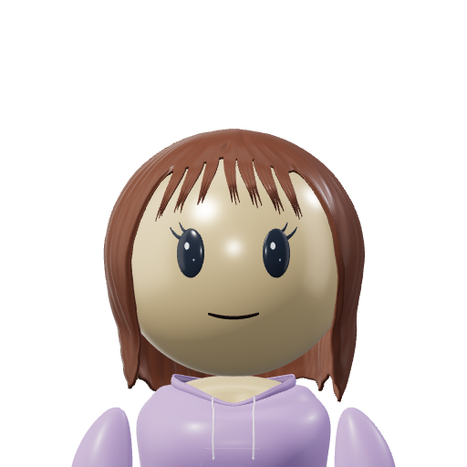
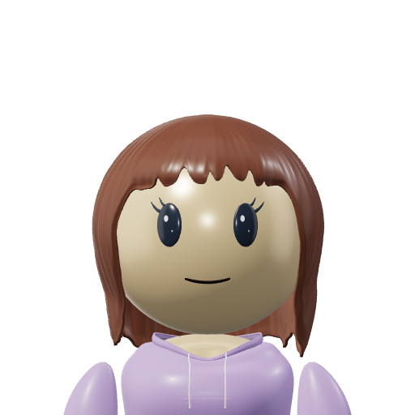
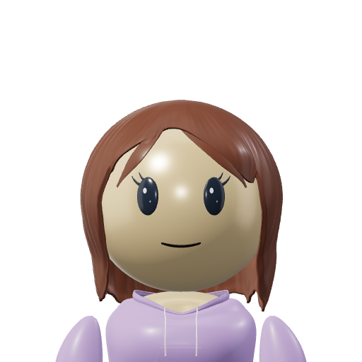
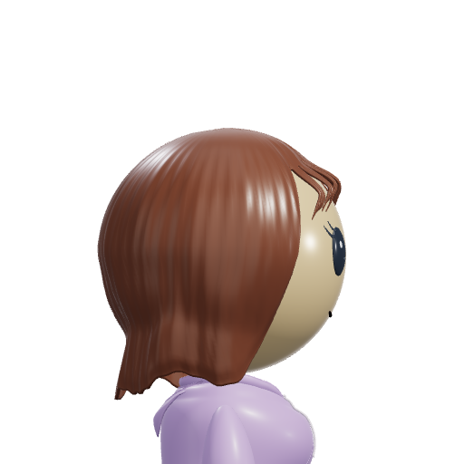
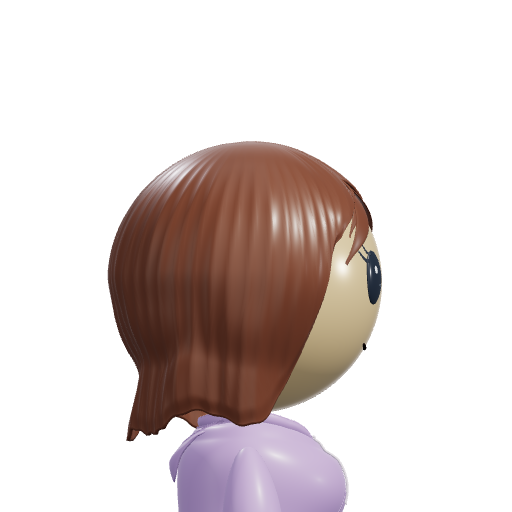
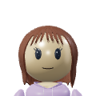
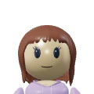
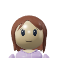
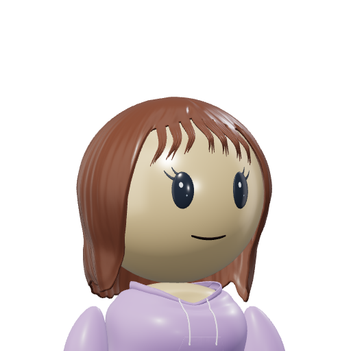
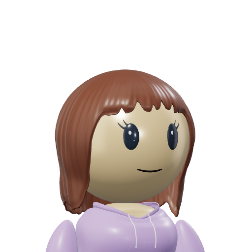
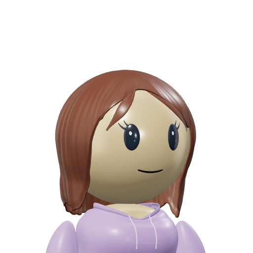
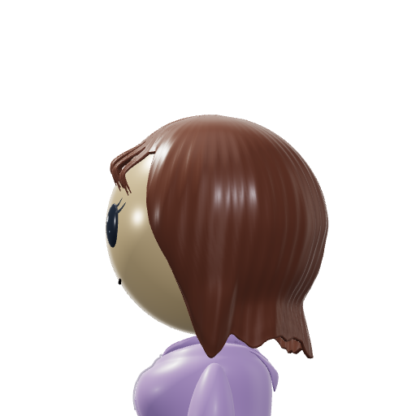
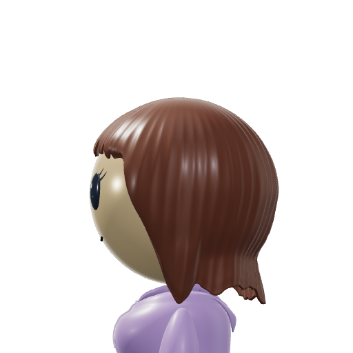
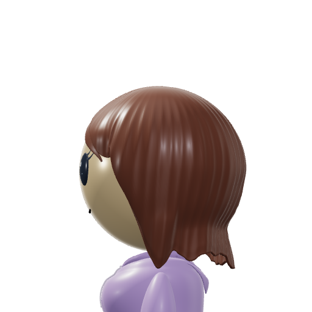
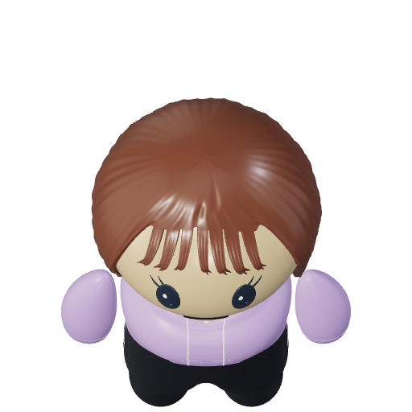
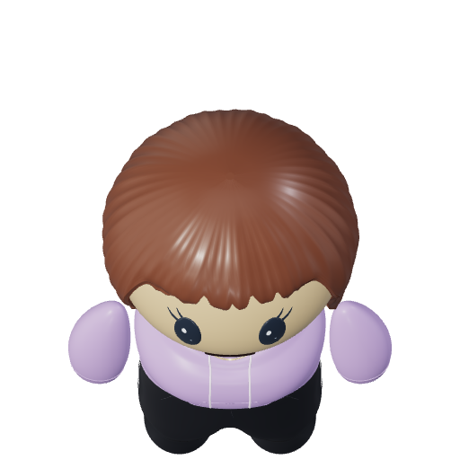
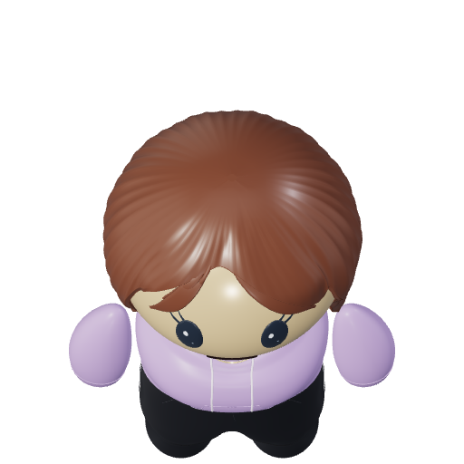